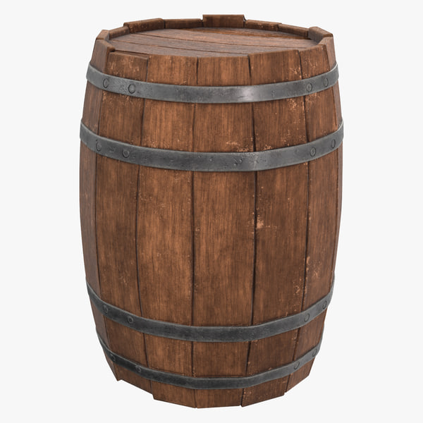

Keg
Bat
Car



A keg is a small barrel.
Wooden kegs made by a cooper were used to transport nails, gunpowder, and a variety of liquids.
Bats are mammals of the order Chiroptera.
With their forelimbs adapted as wings, they are the only mammals capable of true and sustained flight.
A car (or automobile) is a wheeled motor vehicle that is used for transportation.
Most definitions of cars say that they run primarily on roads, seat one to eight people, have four
wheels, and mainly transport people instead of goods.